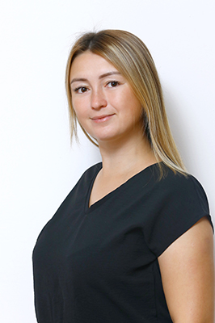

ЧПК2
Рейтинг педагогов Сентябрь 2021
Липс
Надежда Ивановна
Преподаватель психолого-педагогических дисциплин, куратор 3/2 учебной группы направления подготовки 44.02.01 Дошкольное образование, первое место в рейтинге участия преподавателей в деятельности Колледжа (100 баллов)

Хабибулина
Марина Борисовна
Заведующая учебно-производственной практикой, преподаватель теории и методики дисциплин начального обучения, руководитель предметно-цикловой комиссии дисциплин специальности «Преподавание в начальных классах», второе место в рейтинге участия преподавателей в деятельности Колледжа (60 баллов)

Зайкова
Елена Александра
Преподаватель продуктивных видов деятельности, руководитель студии изобразительного искусства «Студия «Мир творчества», второе место в рейтинге участия преподавателей в деятельности Колледжа (60 баллов)

Деулина
Ирина Сергеевна
Преподаватель теории и методики дисциплин начального обучения, куратор 2/6 учебной группы направления подготовки 44.02.02 Преподавание в начальных классах, третье место в рейтинге участия преподавателей в деятельности Колледжа (58 баллов)

Журавлева
Ксения Викторовна
Руководитель информационно-методическим центром, преподаватель специальных дисциплин дошкольного образования, куратор 1/3 учебной группы направления подготовки 44.02.01 Дошкольное образование, третье место в рейтинге участия преподавателей в деятельности Колледжа (58 баллов)

Трошина
Юлия Вячеславовна
Педагог-психолог, куратор 2/4 и 4/4 учебных групп направления подготовки 44.02.01 Дошкольное образование, куратор самой здоровой учебной группы по итогам 2020/2021 учебного года, руководитель первичного отделения профсоюза Колледжа, четвертое место в рейтинге участия преподавателей в деятельности Колледжа (57 баллов)

Романюк
Мария Евгеньевна
Преподаватель продуктивных видов деятельности, руководитель дополнительной образовательной программы «Основы конструирования и робототехники», куратор 2/5 и 3/5 учебных групп направления подготовки 44.02.02 Преподавание в начальных классах, четвертое место в рейтинге участия преподавателей в деятельности Колледжа (57 баллов)

Апалькова
Алина Александровна
Преподаватель теории и методики физического воспитания детей дошкольного возраста, руководитель предметно-цикловой комиссии 44.02.01 Дошкольное образование, куратор 4/2 учебной группы направления подготовки 44.02.01 Дошкольное образование, пятое место в рейтинге участия преподавателей в деятельности Колледжа (55 баллов)
